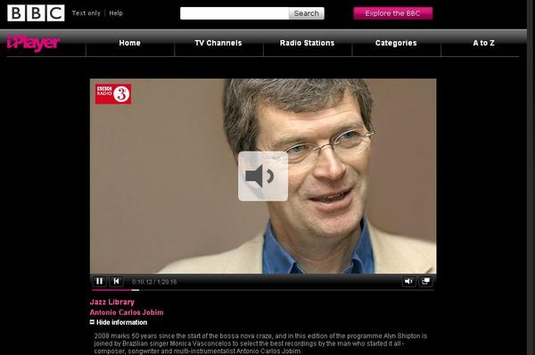

POSTS
[Bossa Nova] BBC Jazz Library - Antonio Carlos Jobim
언제나 착한 방송 BBC의 Jazz Library에서 2009년 12월 6일 방송한 Antonio Carlos Jobim 음악을 주제로 진행한 프로그램
http://www.bbc.co.uk/iplayer/episode/b00d3qx3/Jazz_Library_Antonio_Carlos_Jobim/

< PLAYLIST >
DISC 1
Title
Desafinado
Artist Antonio Carlos Jobim
Composer Jobim / Mendonca
Album Warner Brothers Years
Label Rhino
Number 7675 Track 12
Jobim (voc.)
DISC 2
Title
Canção em Modo Menor
Artist Antonio Carlos Jobim
Composer Jobim
Album Fotografia: Os Años Dourados de Tom Jobim
Label Planet Rhythm
Number 0005554 Track 19
Jobim (voc.)
DISC 3
Title
Modinha
Artist Antonio Jobim & Elis Regina
Composer Jobim
Album Elis & Tom
Label Polygram
Number 001129602 Track 4
Personnel: Jobim (piano); Elis Regina (voc); Cesar Camargo Mariano (piano); Helio Dlmiro (guitars); Luizao Maia (bass); Oscar Castro Nieves (ac. guitar); Paulo Braga (drums)
Recorded: MGM Studios, Los Angeles, California between February 22 and March 9, 1974
DISC 4
Title
Águas de Março
Artist Antonio Carlos Jobim
Composer Jobim
Album Elis & Tom
Label Polygram
Number 001129602 Track 1
Personnel and date as ‘Modinha’
DISC 5
Title
Borzeguim
Artist Antonio Carlos Jobim
Composer Jobim
Album Passarim
Label Verve
Number 833234-2 Track 3
Personnel: Paulo Jobim (vocals, guitar); Danilo Caymmi (vocals, flute); Ana Lantra Jobim, Elizabeth Jobim, Maucha Adnet, Paula Morelenbaum, Simone Caymmi (vocals); Jaques Morelenbaum (cello); Sebastiao Nelo (bass); Paulo Braga (drums).
Rec: 1987
DISC 6
Title
Inútil Paisagem
Artist Antonio Carlos Jobim
Composer Jobim
Album Elis & Tom
Label Polygram
Number 001129602 Track 14
Personnel and date as ‘Modinha’
DISC 7
Title
Matita Perê
Artist Tom Jobim
Composer Antonio Carlos Jobim
Album Matita Perê
Label Polygram International
Number 826856 Track 3
Personnel: João Palma & Airton Moreira (percussion); Antonio Carlos Jobim (piano, strings, vocals); Harry Lookousky (spalla); Claus Ogerman (arrangements)
Rec. 1973
DISC 8
Title
Luisa
Artist Edu Lobo
Composer Jobim
Album Sem Limite
Label Universal
Number 73145862982
Personnel: Edu Lobo (voc.); Tom Jobim (piano).
DISC 9
Title
Lígia
Artist Antonio Carlos Jobim
Composer Jobim
Album Urubu
Label Wrong
Number 925860 Track 2
Personnel: Jobim (piano & vocals); Harry Lookofsky (violin); Joe Farrell (sop. sax); Urbie Green (trombone); Hubert Laws (flute); Ron Carter (bass); João Palma (drums); Everaldo Ferreira (conga).
DISC 10
Title
The Girl From Ipanema
Artist Antonio Carlos Jobim / Vincius de Moraes / Norman Gimbel
Composer Antonio Carlos Jobim
Album The Composer of Desafinado Plays
Label Verve
Number 9418 Track 1
Personnel: Stan Getz (tenor); A.C. Jobim (piano); Joao Gilberto (guitar / voc.); Tommy Williams (bass); Milton Banana (drums); Astrud Gilberto (vocals)
Rec. March 18 or 19, 1963 in N.Y.C.
DISC 11
Title
Chovendo Na Roseira
Artist Antonio Jobim & Elis Regina
Composer Jobim
Album Elis & Tom
Label Polygram
Number 001129602 Track 4